Осьминог за роялемThe octopus pianist
Eight Arms, Seven Keys: осьминог во фраке играет семью щупальцами на клавишах, восьмым жмёт педаль. Цикл 8 с, 207 SVG-анимаций, первый и последний кадры совпадают пиксель в пиксель.Eight Arms, Seven Keys: an octopus in a tailcoat plays the keys with seven arms and works the pedal with the eighth. An 8-second loop, 207 SVG animations, the first and last frames match pixel for pixel.


Выглядит как настоящий стикер, но стула нет: осьминог висит над роялем. Для такой идеи простенько.It looks like a real sticker, but there is no chair: the octopus floats at the piano. A bit plain for this idea.
Что смотретьWhat to look for
- 01Семь щупалец тянутся к клавишам, восьмое жмёт педаль.Seven arms reach for the keys, the eighth works the pedal.
- 02Посмотрите под осьминога: стула нет, он висит над роялем.Look under the octopus: there is no chair, he floats at the piano.
- 03Где цикл начинается заново, не видно: первый и последний кадры совпадают.You cannot see where the loop restarts: the first and last frames match.
ПроверкаChecks
Цикл 8 с, 207 SVG-анимаций. Один файл scene.svg без картинок, шрифтов и JavaScript.An 8-second loop with 207 SVG animations. One scene.svg file with no images, fonts or JavaScript.
Промпт моделиThe prompt
Русский перевод. Модель получила промпт на английском.
Нарисуй анимированную SVG-картинку: осьминог во фраке играет на рояле всеми восемью щупальцами.
Это должно быть смешно: зритель улыбается в первые две секунды. Персонажи по-настоящему взаимодействуют - лапы на руле, ноги на педалях, предметы в руках. Всё узнаётся без подписей.
Представь, что это стикер, который разлетится по всему Telegram.
Бесшовный цикл 6-10 секунд. Один файл scene.svg: без картинок, шрифтов из интернета и JavaScript.
Не задавай вопросов. Открой, проверь, что всё анимируется, и заканчивай.Draw an animated SVG picture: an octopus in a tuxedo plays a grand piano with all eight tentacles.
It has to be funny: the viewer smiles within the first two seconds. The characters really interact - paws on the wheel, feet on the pedals, objects in hands. Everything reads without captions.
Imagine this is a sticker that will spread all over Telegram.
Seamless loop, 6-10 seconds. One file, scene.svg: no images, no web fonts, no JavaScript.
Don't ask questions. Open it, check that everything animates, and finish.Скачать промпт (RU)Prompt in Russian · Скачать оригинал (EN)Original prompt (EN) · Исходники на GitHubSource on GitHub
Новые тесты нейросетей, ссылки на игры и опросы - в Telegram-канале.New AI model tests, game links and polls in my Telegram channel.